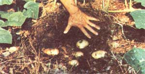

IT doesn't matter where you live nor what kind of soil (even If It's rocky old hardpan) you have to work with. I'll bet you can still raise all the "no-work, no-care, trouble-free" potatoes your family can eat If you know just one gardening secret: Grow those potatoes In mulch, and lots of It.
It doesn't seem to matter what kind of mulch you use either. We've tried pine needles, sawdust, leaves, moldy hay, and straw so far ... and they've all produced the same excellent results.
It's OK to plow, fertilize, or otherwise work the earth when you raise potatoes with this method ... then again, it's not really necessary. I like to just scratch my rows slightly into the earth with a hoe, drop In my cut potatoes, and then cover the entire bed with six to eight Inches of mulch. The rows should be 12 to 15 inches apart, each piece of potato must-of course-contain at least one or two "eyes", and the chunks of seed stock are best spaced about a foot apart. And when I say to cover the bed with mulch, I mean just that: No dirt at all need be raked over the pieces of potato.
Once the sprouts are up about four inches, you may (if you didn't work manure into the plot before the potatoes were planted) want to add a balanced fertilizer to the bed. But that's about all the care this section of the garden should need all the way through to harvest time. I doubt that you'll even have any Insect problems.
Curious gardeners and children will enjoy lifting the mulch occasionally throughout the growing season to see the little sections of cut spuds multiply and grow into big whole potatoes. But the real fun takes place once the vines have died and It's time to "reap what you have sowed". Hey! There's no laborious digging necessary! just pull the mulch back with a rake ... and pick up the clean, blemish-free potatoes by the handful. The mulch can then be put around late tomatoes or other vegetables to keep down the weeds and hold In moisture.
|
 Push back the mulch, pick up the epotatoes...and the squash vine take over! |
|
|